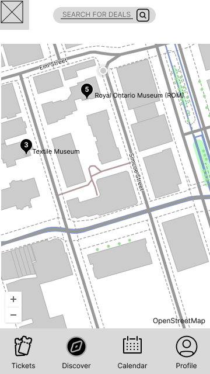
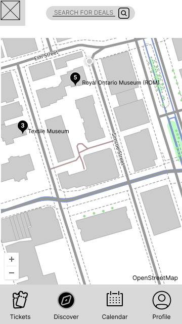

Conclusion: Thoughts and Takeaways
The goal of this project was to create a clean, functional UI that simplifies how Torontonians discover and access museum ticket deals.
Designing around real-world fragmentation (many museums, different systems) required a UI that could bring coherence without overwhelming the user. Through visual hierarchy, smart filtering, and minimal navigation, we created a prototype that felt both local and user-friendly.
Also, I envisioned it as an AI-powered interface: its recommendations and event highlights would adapt based on user preferences and behaviour data, improving relevance over time.
Key Takeaway: Design clarity
When systems behind the scenes are messy, UI must work harder to maintain simplicity. The interface must earn the user’s trust by making complexity invisible.


 
